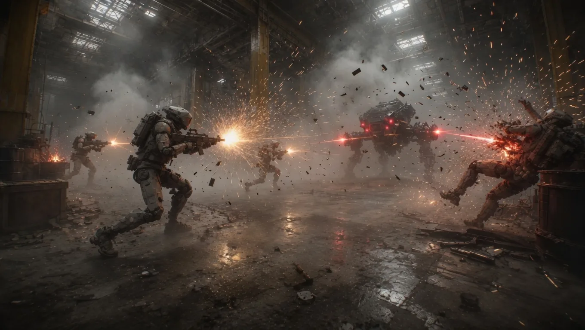
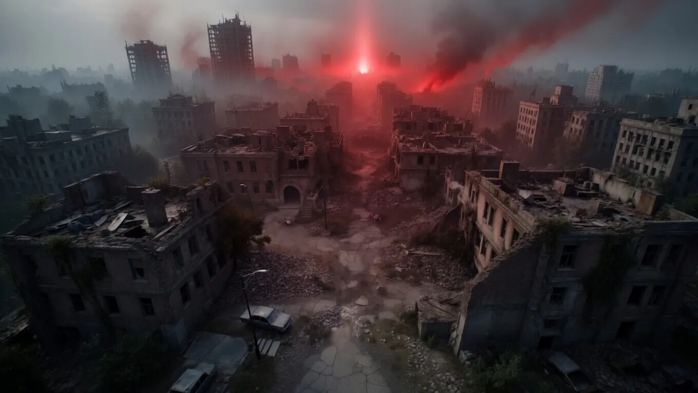
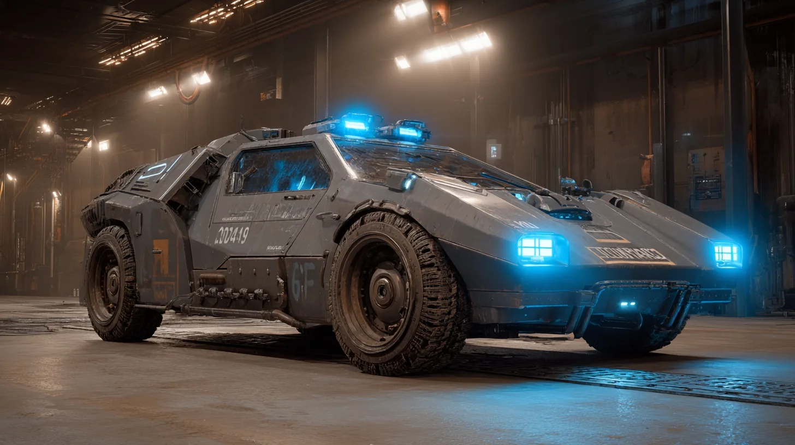
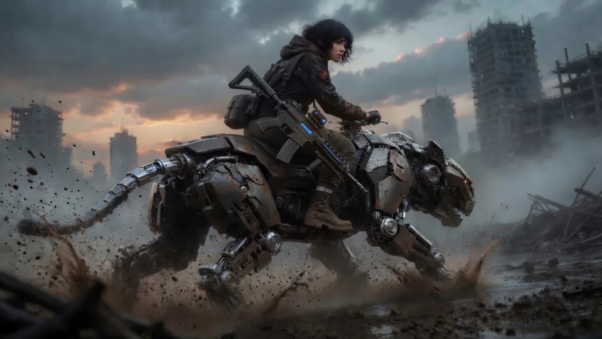
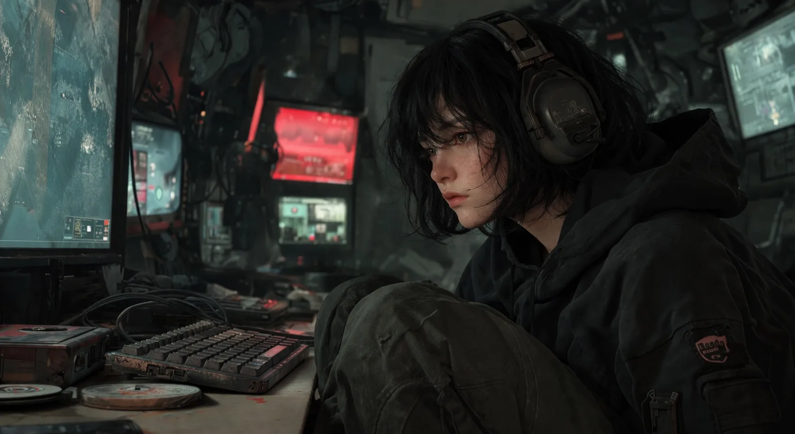
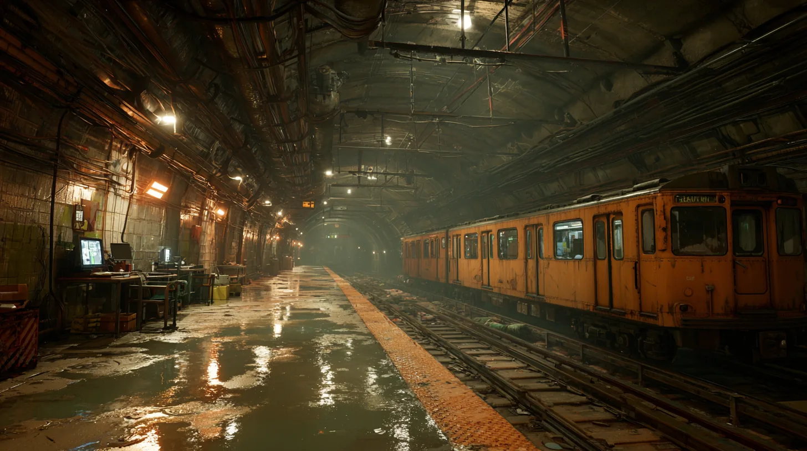

목적지 기반의 여정 구조 안에서 소녀와 함께 이동하며, 배달의 목적성과 동행의 서사를 전투와 전투 사이에 배치합니다.
Overview
인간이 '위험 요소'로규정된 세계
멈추는 순간 죽는 세상에서 천재 해커 소녀와 과거 AI를 만든 중년남성은 인류의 마지막 도피처 생츄어리를 향해 이동한다. 끊임없이 추격하는 기계 센티넬과 인류를 지우려는 AI의 논리 속에서 두 사람은 결국 선택해야 한다.
인류를 지킬 것인가, 바꿀 것인가.
- Engine
- Unreal
- Platform
- PC / Console
- Genre
- Narrative Driven Shooting
- Scale
- AAA Title
- Rating
- 15세 이상
- Target
- 2029 하반기
적의 공격 패턴을 읽고 완벽한 순간에 반격하는 리듬으로, 슈팅 타격감과 타이밍 반격의 긴장감을 만듭니다.
전투와 여정의 순간이 두 사람의 이야기로 누적되고, 관계의 성장과 서사의 진화가 플레이 경험으로 이어집니다.
Visual Direction
생존, 이동, 추격의 이미지





